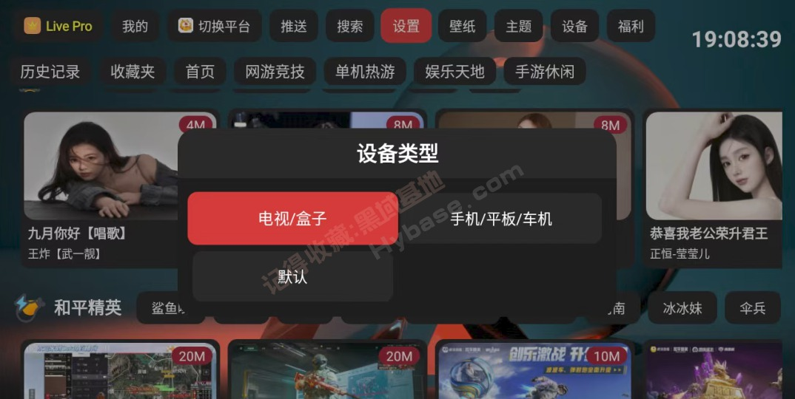
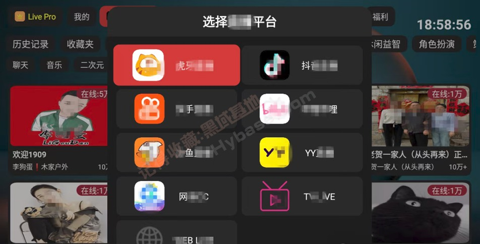

FUSE 用了大半年：从遥控器按不对到跨设备自动同步的那些变化
从 2.x 时代一路用到 3.0.32，聊聊这款聚合直播软件在设备适配、同步机制、平台支持上的长期体验——哪些细节越用越顺手，哪些当初没在意的问题慢慢冒头。
装 FUSE 到现在快八个月了。最初是在电视盒子上找聚合直播工具，试了两三款之后留下了它，当时版本还在 2.1.x 系列。那段时间主要是虎牙和 B 站的主播在追，换过一两个客户端都觉得要么弹幕不同步、要么遥控器按半天找不到收藏夹入口。从下载拿了安装包装上跑了几天，上它的官网看了一下整体介绍，界面确实清爽，就定下来了。
哪点越用越顺手
遥控器按键逻辑是第一个让我觉得"这个软件在认真迭代"的地方。刚装那会儿方向键的行为记不住，上键和右键到底是调弹幕还是换直播间，每次都要试一遍。后来 3.0.17 做了一次大重构，菜单键呼出的设置面板把弹幕设置和界面设置整合到了一起，不用退回首页改参数了。再过几个月到 3.0.28，又把横竖屏切换补上了——虽然电视上基本用不上，但有时候接个便携投影或者手机投屏的时候发现这个选项还挺贴心。
说个反直觉的，设备类型选择这个步骤一开始觉得是多余的。第一次启动就弹窗让选电视还是手机，我当时随手点了默认，结果界面比例不对，电视上显示出了触屏布局的留白。改到"电视/盒子"之后画面瞬间正常了。后来给平板装的时候才意识到这个选项的重要性——触屏设备和遥控器焦点的布局逻辑完全不一样，选错了再去设置里改虽然也能改，但首启就选对省得折腾。现在家里电视、盒子、平板三台设备，每次装完第一反应就是确认设备类型选对了。

跨设备同步功能是 3.0.19 上的，这个来得比我预想的实用。之前多设备迁移靠的是收藏夹导出文件再导入，每次换设备都要手动走一遍，而且导出的文件还得记得存哪儿。现在扫码登录之后收藏夹自动同步过来了，昨天在电视上收藏的直播间，今天打开平板就能看到。官方没说同步的具体范围，去FUSE文档翻了一下也没找到明确说明，但至少收藏夹是稳定在工作的。我还是保持一个习惯：每隔几周手动备份一次收藏夹到本地文件，毕竟之前清理缓存导致收藏夹被清空的 bug 在老版本里确实出现过（2.1.17 修的），保险起见。
哪点越用越烦
快手平台的支持状态让我有点意外。当初刚装的时候没注意平台功能矩阵，后来朋友推荐我看一个快手上的主播，打开 FUSE 切到快手频道发现没有弹幕，也不能收藏。查了官方的支持矩阵才知道，快手是七个平台里限制最多的——弹幕、收藏、推送、搜索全不支持，只能看直播画面。这不完全是 FUSE 的问题，但作为聚合客户端，不同平台之间体验差距这么大，还是有点遗憾。
另一个让我慢慢意识到的问题是版本更新带来的平台变动。网易CC是 2.1.13.1 版本加进来的，用了大概半年多，然后 3.0.32 版本里又被移除了。官方没说具体原因，只是更新日志里一条"移除 网易CC"就带过了。我倒不是网易CC的重度用户，但这种"今天能用明天就没了"的感觉不太好——不知道哪个平台会在下次更新里被下线。
还有个小烦恼：搜索功能仅限虎牙可用。B 站、抖音、斗鱼这些平台都没有站内搜索，想找某个主播得自己在外面搜房间号再回来输。当然这可能是各平台的限制，不一定是 FUSE 本身的问题，但用起来确实不方便。
哪个功能成了每天离不开的
说出来可能有点出人意料——是刷抖音模式。我之前一直觉得用电视刷短视频是个伪需求，直到某次周末躺在沙发上懒得拿手机，用遥控器在 FUSE 里切到抖音频道试了一下。上下键切换视频、左右键开评论区、菜单键呼出功能栏，这套操作逻辑跟刷手机的体验很像，只是把触屏换成了遥控器。现在每天晚饭后会刷十来分钟，有时候遇到感兴趣的内容用 OK 键暂停、菜单键进评论区看看，比在手机上举着胳膊舒服多了。
菜单键呼出的功能栏设计得挺全——全屏、评论、作者主页、相关视频、连播、弹幕、清屏、点赞、关注、收藏，常用操作都覆盖了，不用退出当前视频就能完成。3.0.22 重构之后这套逻辑更顺了，之前版本里切评论区偶尔会卡住，现在基本没碰到过。
哪个碰都没再碰
Twitch 频道。不是说 Twitch 不好，而是 3.0.18 之前的版本出现过无法播放的问题，那次之后我就没再主动切进去过。虽然后来升级版本确认这个问题修了，但可能是没养成看 Twitch 的习惯，或者说平时关注的主播都在虎牙和 B 站，这个频道一直处于"知道在那儿但不会点开"的状态。
观感修正
当初装 FUSE 的时候觉得它就是个聚合播放器，功能跟同类软件差不多。用了大半年下来，有两个判断被修正了：
一是高估了"平台聚合"这件事本身。之前以为接的平台越多越好，现在发现体验差异才是关键。虎牙的支持最完整，六项功能全可用；B 站和抖音除了没搜索其他都还行；快手基本只能看直播。与其追求覆盖更多平台，不如把已有平台的体验做扎实。
二是低估了跨设备同步的重要性。当初觉得导出导入收藏夹文件也不麻烦，现在登录就能自动同步之后，再让我手动导文件反而觉得费劲。这个功能上线的时间点也巧，刚好是我添置了第二台设备的时候。
去留结论
目前没打算卸载，短期内也没有换客户端的理由。每天固定用的几个场景——电视上追虎牙直播、平板上补 B 站录播、饭后用刷抖音模式放松几分钟——FUSE 都能 cover 住。
但有一个信号出现的时候我会认真考虑换方案：如果哪天抖音频道或者 B 站的支持状态出了问题，比如又某个平台被移除了，或者弹幕不同步的老毛病复发。聚合客户端的核心竞争力还是各个平台的支持稳定性，这一点掉链子的话，再清爽的界面也留不住。

总的来说，大半年用下来 FUSE 从"还行"变成了"离不开"。遥控器按键逻辑的多次重构、跨设备同步的补上、设备类型选择的首启引导——这些都是真正在为用户着想的改动。当然快手的功能限制、平台随版本变动这些问题也确实存在，只是目前还没到让我换掉它的程度。整理这篇文章的时候发现相关资料在三个仓库都有镜像，GitHub上的原版、Gitee和GitCode上的镜像，国内访问选后两个更快。